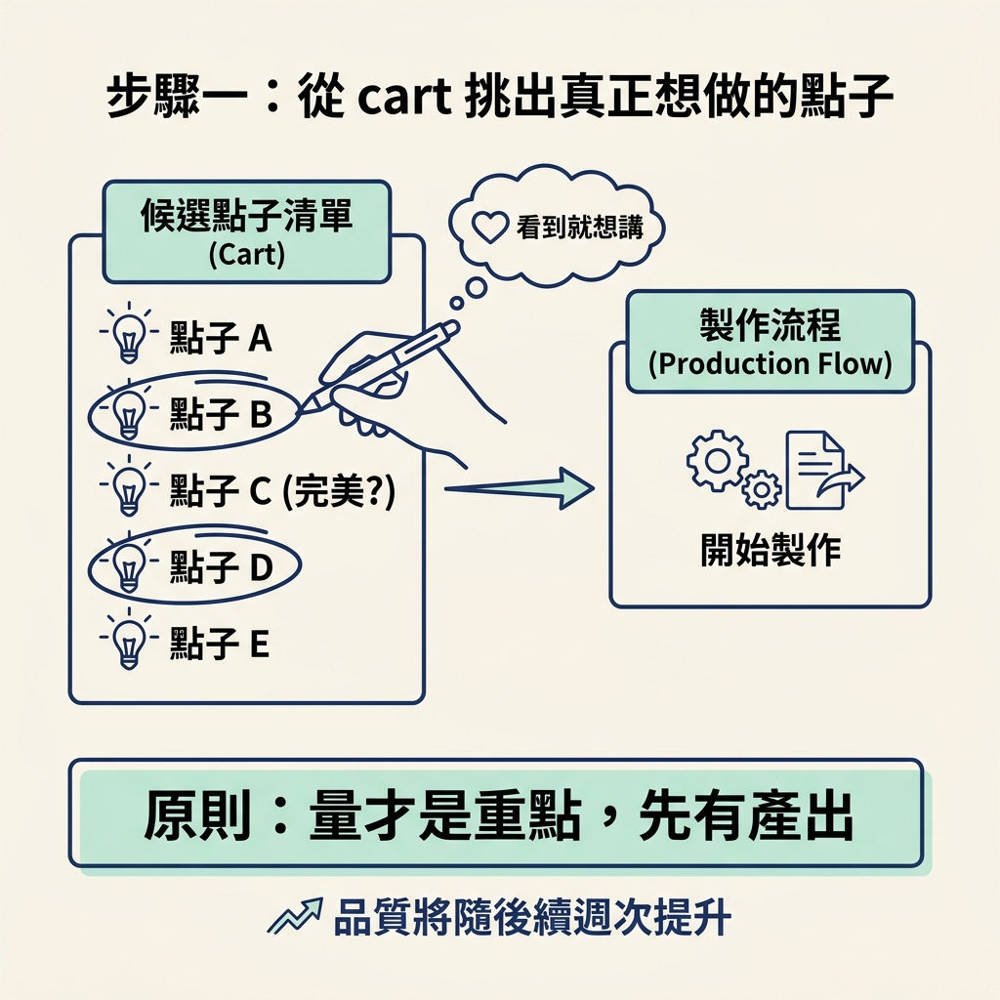
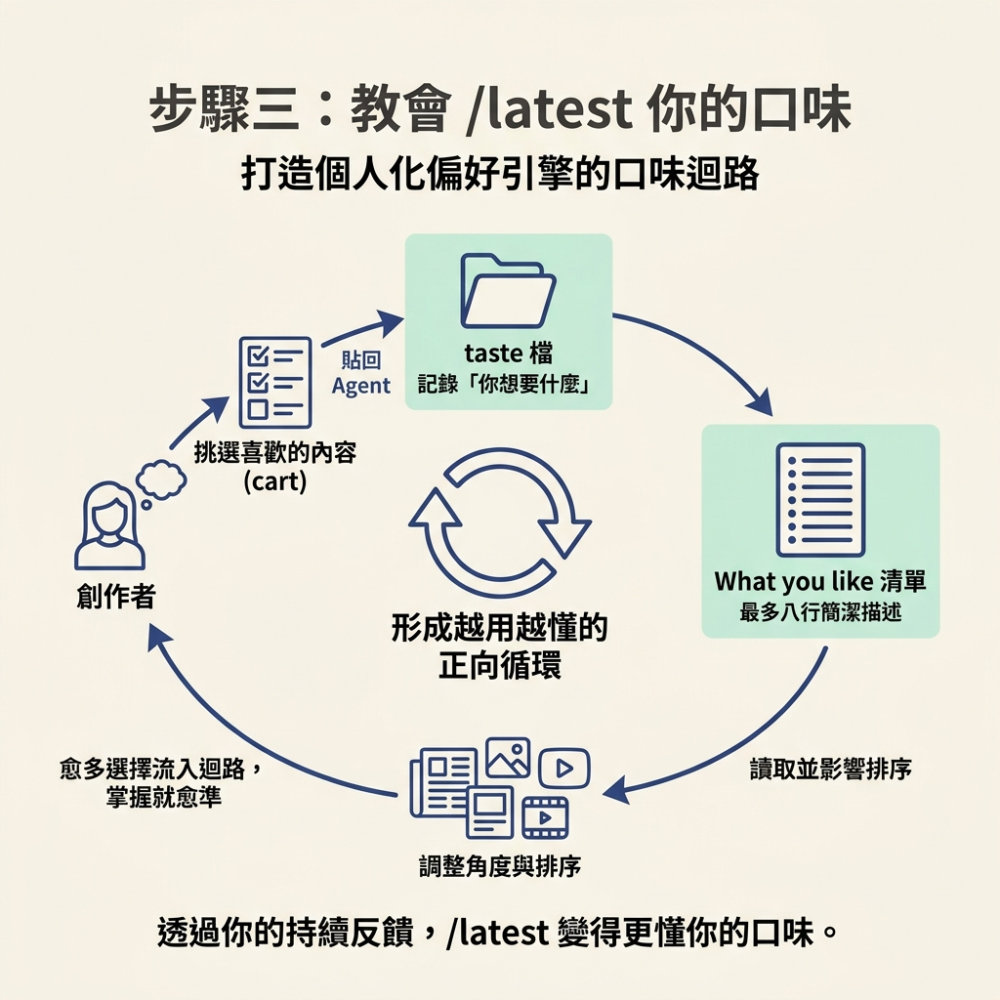
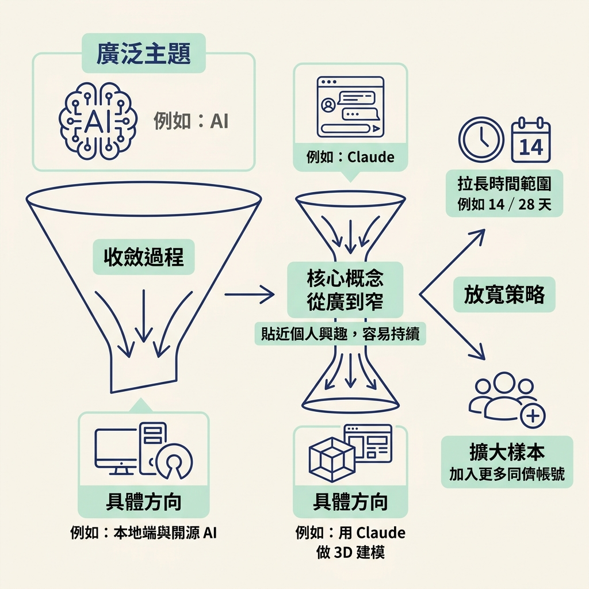

這是整個流程的最後一步：上一節跑完 `/latest` 後，你會拿到結果頁和一份 cart（點子清單）；這一節要把清單裡的點子挑出來、改寫成自己的腳本，再把你的選擇回饋給工具。做完後，你會有一支能開始錄的短影音腳本，也會讓 `/latest` 下次更懂你的偏好。
你會從 cart 挑出要做的點子，用自己的語氣改寫成腳本，並透過「口味迴路」（taste loop，也就是把偏好回饋給工具，讓它逐步調整結果）教會 `/latest` 你喜歡什麼。若結果太少，也會知道如何放寬條件。
上一節跑完 `/latest`，你手上已經有結果頁和一份 cart。但點子不等於內容：清單再漂亮，沒有變成一支講得出來的腳本，就還只是待辦清單。這一節要完成最後一哩路：挑選、改寫，再把選擇回饋給工具。
做完後，你會得到一支自己的腳本，也會調校一次 `/latest`。這一步讓它不再只是一次性的查詢工具，而是能參考你過去選擇的夥伴。
打開結果頁，挑出讓你有共鳴的點子。講師的原則很簡單：選那些你看到就會想講的。接下來你要親自講、親自發布；挑一個連自己都覺得無聊的題目，只會浪費難得擠出的時間。
記住反覆強調的原則：量才是重點。與其糾結哪一個最完美，不如挑兩三個，開始做成內容並發布。品質會在後續週次逐步提升；這一週的任務，是先把點子變成實際產出。

選好點子後，把它們交給 Claude，請它寫成一支可以直接照著講的短影音腳本，例如適合在 TikTok 或 Instagram 上口述的形式。這裡有一個不能省略的條件：使用你自己的語氣（your own tone of voice）。同一個點子，只有用你的口吻講出來，才會像你，也才像觀眾追蹤的那個人。
第一次寫出來不夠好也沒關係，講師提醒：現在不用擔心。後續模組會專門處理腳本怎麼改好。這一節的任務，是先把點子推進到「講得出來」的狀態，接著開始錄。先做出內容，之後才有東西可以修改。
接下來使用口味迴路，將你喜歡的點子回饋給 `/latest`。之後再執行時，它會把符合偏好的點子排得更前面，也會調整角度，讓結果更貼近你的興趣。整個流程分成三個小步驟。
結果頁的購物車裡有一個按鈕，名稱是 Copy for my agent。按下後，你挑選的點子會被複製成一段純文字，並以 `Idea cart:` 開頭。把這段文字貼回 agent 就可以了。
如果你貼回的內容中有一行 `From:` 指向 `/latest`，agent 就會把整段文字交給這個 skill 的 `scripts/taste.py add -`。這個程式負責寫入資料：它會把這批挑選及其計數存進 skill 資料夾的 `taste.md`。幾個指令的用途如下：
python scripts/taste.py add - # the pasted idea cart on standard input (or a file path instead of -)
python scripts/taste.py like - # the rewritten "What you like" list on standard input, one line each
python scripts/taste.py show # print the taste file
add [--skill /latest] # which skill's picks to keep; picks for another skill are left for it
實際呼叫時，agent 會用 here-document（把一段文字直接傳給指令的方式）將 cart 餵給程式，格式如下：
python scripts/taste.py add - <<'CART' Idea cart: 2 picks, in my order. (the rest of the pasted text) CART
程式會依照每筆挑選的 `From:` 欄位過濾，只留下屬於 `/latest` 的項目。負責判斷的程式碼是：
mine = [p for p in picks if p.get("From", "").split(",")[0].strip().lower() == skill.lower()]
因此，如果 cart 裡混有其他 skill（例如 `/outliers`）的點子，這些項目會留給對應的 skill 處理，不會算進 `/latest` 的口味。
儲存挑選結果後，agent 會整理這些點子共同的主題、形式、來源和角度，再和檔案裡原有的內容合併，寫成最多八行的白話清單，並送進 `python scripts/taste.py like -`。
這份清單會把「你想要什麼」記錄下來。之後每次執行 `/latest`，它都會先讀取這份檔案（如果檔案已存在），再決定如何排序和調整角度。簡單來說，你選得越多，它就越能掌握你的偏好。

不過，口味回饋不是萬能的。skill 會提高符合你偏好的點子排名，也會調整呈現角度，但不會蓋過這週真正重要的新聞，也不會為了迎合你而編造內容。你的偏好是在真實新聞上加權，不會讓工具只看你喜歡的題材。
結果頁背後的資料有固定格式。點子符合 taste 檔裡的偏好時，資料會多出一個 `fit` 欄位，簡單說明它為什麼符合你的口味。點子卡片的資料大致如下：
{
"id": "https://www.reddit.com/r/medicine/comments/1x03ipt/",
"rank": 1,
"title": "Short working title",
"platform": "reddit",
"source": "r/medicine",
"author": "top comment by u/someone",
"date": "2026-10-07",
"url": "https://www.reddit.com/r/medicine/comments/1x03ipt/",
"angle": "What the user would say and show.",
"why": "Why it helps the audience, or why now.",
"metrics": [{ "label": "points", "value": 388 }, { "label": "comments", "value": 285 }],
"check": "opened",
"fit": "Matches your taste: liability and safety angles, filmed on made-up patients."
}
其中，`angle` 說明「你會怎麼講、要讓觀眾看什麼」；`fit` 則說明這個點子為什麼符合你的口味。頁面上出現 fit 說明，就表示系統已把你的偏好納入考量。
有時候結果太少，或挑不到夠用的點子，可以依序試試以下做法：
另一個讓主題更好用的技巧，是從廣到窄。例如，主題如果是 AI，你真正想講的可能是「本地端與開源 AI」；主題如果是 Claude，你可能更想談「用 Claude 做 Blender 裡的 3D 建模」。把大主題收斂到你真正喜歡、或本來就在做的事，點子會更貼近你，也比較容易持續做下去。

點子到手後，照順序完成三件事。第一，從 cart 挑出你真正想講的點子；記住，量才是重點。第二，把選好的點子交給 Claude，寫成一支用自己語氣講的短影音腳本；第一次寫得不完美也沒關係，先開始錄。第三，跑口味迴路：按下 Copy for my agent，把以 `Idea cart:` 開頭的文字貼回 agent，讓它用 `taste.py add -` 存進 taste 檔，再用 `taste.py like -` 更新「What you like」清單。下一次執行 `/latest` 時，系統就會參考你的口味排序，但不會蓋過重要新聞。若結果太少，就放寬主題、拉長時間範圍（14 或 28 天），或加入更多同儕帳號。
到這裡，這個節點的五個步驟就完成了：你已經會找井、辨認第一手來源、用 agent 警示持續補充素材、安裝並執行 `/latest`，也能把候選點子變成自己的內容，再用選擇結果調整工具的偏好。下一節會介紹另一個工具 `/inspo` 和「爆款倍數」，帶你觀察別人已經證明會紅的題目，並看出其中的線索。